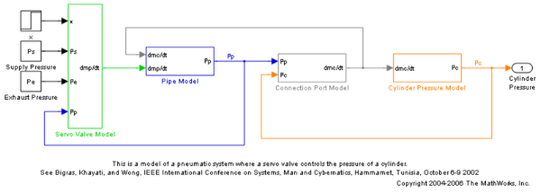
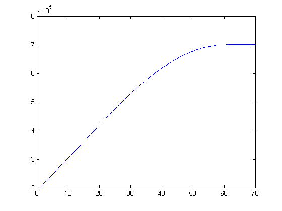
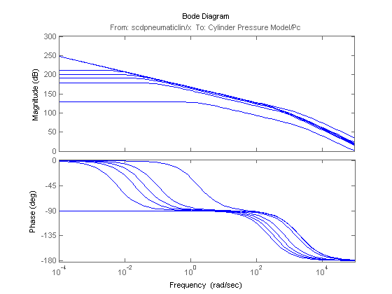

Linearization of Pneumatic System at Simulation Snapshots
Contents
This is a demonstration of the use of the time based operating point snapshot feature in Simulink® Control Design™. This demo uses a model of the dynamics of filling a cylinder with compressed air.
Pneumatic System Demo
scdpneumaticlin
Get the Initial Simulation
[t,x,y] = sim('scdpneumaticlin');
Plot the Simulation Results
In this example, the supply pressure is closed and the system has an initial pressure of 0.2 MPa. The supply pressure is at 0.7 MPa and in the simulation the servo valve is opened to 0.5e-4 m. During the simulation, the pressure increases from the initial pressure of 0.2 MPa and eventually settles at the supply pressure.
plot(t,y);
Gathering Simulation Snapshots
To get operating point snapshots at various instants of the simulation use
op = findop('scdpneumaticlin',[0 10 20 30 40 50 60]);
The operating points are a vector that can be accessed using
op(2)
Operating Point for the Model scdpneumaticlin.
(Time-Varying Components Evaluated at time t=10.5603)
States:
----------
(1.) scdpneumaticlin/Cylinder Pressure Model/dPc//dt
x: 3.1e+005
(2.) scdpneumaticlin/Pipe Model/dPp//dt
x: 3.11e+005
Inputs: None
----------
The operating point is now ready for linearization. First specify the input and output points using the commands:
io(1) = linio('scdpneumaticlin/x',1,'in'); io(2) = linio('scdpneumaticlin/Cylinder Pressure Model',1,'out');
Linearize the model and plot the Bode plot for each condition to see the variablity in the linearizations.
sys = linearize('scdpneumaticlin',op,io); bode(sys) bdclose('scdpneumaticlin')